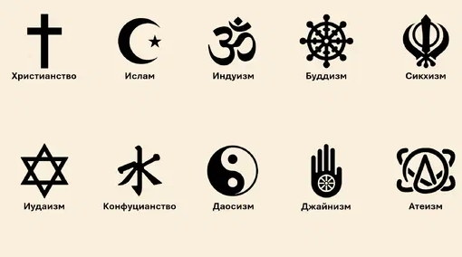

Образовательный портал
о религиях мира

Что такое религия
и зачем она людям?
Путешествие сквозь века и культуры в поисках ответа на главные вопросы бытия
Что такое религия?
Религия (от лат. religio — «связь, благочестие») — это не просто набор обрядов и догматов. Это глубинная связь человека с чем-то бóльшим, чем он сам. Это попытка осмыслить своё место в бесконечной вселенной.
В разных культурах ответы на эти вопросы звучат по-разному, но все они объединены одним — стремлением к гармонии с собой, с другими людьми и с миром.
Вера
Глубокое доверие к высшим силам, которое наполняет жизнь смыслом и уверенностью.
Нравственность
Религия даёт моральные ориентиры, учит доброте, состраданию и справедливости.
Общность
Вера объединяет людей в общины, создаёт чувство принадлежности и поддержки.
Смысл
Помогает переживать трудные моменты, дает надежду и внутреннюю опору.
Как появилась религия?
Самые древние религиозные практики возникли более 100 000 лет назад. Первобытные люди верили в духов природы, почитали животных и явления природы. Это было началом духовного пути человечества.
«Человек — это единственное существо, которое ищет смысл там, где его, казалось бы, нет. И в этом его величие.»
С развитием цивилизаций религии становились более сложными. Появились монотеизм (вера в одного Бога), политеизм (вера во многих богов) и нетеистические традиции (например, буддизм).
- Иудаизм — одна из древнейших монотеистических религий (ок. 2000 лет до н.э.)
- Буддизм — возник в VI веке до н.э. как путь освобождения от страданий
- Христианство — появилось в I веке н.э., принесло идею всеобщей любви
- Ислам — возник в VII веке н.э., провозгласил единство Бога и братство людей
Гуманизм религий: мудрость, мир и сострадание
В основе всех великих религий лежат одни и те же ценности: любовь к ближнему, сострадание, забота о слабых и стремление к миру. Религии учат человека быть лучше и видеть в каждом ближнем брата или сестру.
Гуманизм в христианстве
Христианство провозглашает безусловную любовь ко всем людям, независимо от их происхождения и веры. Иисус Христос учил: «Любите врагов ваших, благословляйте проклинающих вас». Христианские заповеди призывают к милосердию, прощению и заботе о бедных.
- Заповедь любви: «Возлюби ближнего твоего, как самого себя»
- Милосердие: Помощь больным, голодным, странникам
- Прощение: «Прощайте, и прощены будете»
- Социальное служение: Благотворительные организации, больницы, приюты
Гуманизм в исламе
Ислам учит милосердию и справедливости. Коран многократно подчёркивает важность заботы о сиротах, бедных и путниках. Пророк Мухаммед говорил: «Лучший из людей — тот, кто приносит пользу людям». В исламе запрещено принуждение в религии: «Нет принуждения в вере» (Коран, 2:256).
- Милосердие: Одно из имён Аллаха — «Милостивый»
- Забота о бедных: Закят (обязательная милостыня)
- Запрет на убийство: «Не убивайте душу, которую Аллах запретил»
- Справедливость: Равенство перед Богом всех людей
Гуманизм в иудаизме
Иудаизм — религия справедливости и социальной ответственности. Тора предписывает заботиться о вдовах, сиротах и бедных. Важнейшая заповедь: «Люби ближнего твоего, как самого себя» (Левит 19:18). Иудаизм учит, что каждый человек создан по образу Божьему и достоин уважения.
- Цдака: Справедливость и благотворительность
- Тикун олам: Исправление мира — ответственность каждого
- Уважение к ближнему: Запрет на злословие и унижение
- Правосудие: Равенство всех перед законом
Гуманизм в буддизме
Буддизм — это путь сострадания и ненасилия. Первая заповедь буддизма: «Не причиняй вреда живым существам». Будда учил, что все существа стремятся к счастью и заслуживают сочувствия. Метта (любящая доброта) — одна из главных практик буддизма.
- Ненасилие (Ахимса): Отказ от причинения вреда
- Сострадание (Каруна): Глубокое сопереживание всем живым существам
- Равностность (Упеккха): Отсутствие привязанности и отвращения
- Мудрость (Паннья): Понимание взаимосвязи всех вещей
Гуманизм в индуизме
Индуизм — это путь единства и гармонии. Все существа — проявления единого Божественного. Индуизм учит уважению ко всем формам жизни и признанию святости каждой души. Йога и медитация помогают познать себя и соединиться с миром.
- Ахимса: Ненасилие и уважение ко всему живому
- Васудайва кутумбакам: «Вся вселенная — одна семья»
- Карма-йога: Служение другим без привязанности к результату
- Бхакти-йога: Путь любви и преданности Богу
Гуманизм в синтоизме
Синтоизм учит гармонии с природой и предками. Вся природа священна, и человек — её часть. Синтоизм подчёркивает чистоту сердца, искренность и уважение к традициям.
- Макото: Искренность и правдивость
- Мусуби: Гармоничное взаимодействие со всем сущим
- Уважение к природе: Священные рощи, горы, водопады
- Почитание предков: Связь поколений
Все они учат добру, состраданию, справедливости и уважению. Разница лишь в форме, но суть одна: помогать ближним и искать свет внутри себя.
Христианство
«Возлюби ближнего твоего, как самого себя» — основа нравственности.
Ислам
«Никто из вас не уверует, пока не пожелает брату своему того же, что и себе»
Буддизм
«Не причиняй вреда живым существам» — основа сострадания.
Иудаизм
«Не делай другим того, что ненавистно тебе» — золотое правило.
Какое место занимает человек?
В каждой религии человек занимает уникальное положение. Он не просто часть природы — он со-творец, способный менять мир к лучшему.
ߌѠУченик
Человек учится всю жизнь, приближаясь к мудрости и совершенству.
ߌʠПроводник
Мы проводим божественный свет в мир через добрые дела и заботу.
ߔŠТворец
Каждый из нас создаёт свою реальность мыслями, словами и поступками.
❤️ Друг
Мы призваны быть опорой друг для друга, проявлять сострадание и любовь.
Вне зависимости от веры, все религии учат одному: человек ценен сам по себе, его жизнь имеет смысл, а его душа стремится к свету.
Для тех, кто ищет свой путь
Вера — это не обязательство, а личный выбор. Мир устроен так, что каждый человек волен искать истину там, где чувствует отклик. Если вы сомневаетесь или потеряли веру — это нормально. Вот несколько философских направлений, которые помогают людям осмысливать жизнь без традиционной религии:
Атеизм
Отсутствие веры в сверхъестественное. Мир познаваем через науку и разум. Человек сам творит свою судьбу.
- Атеизм.Агностицизм
Позиция, что существование Бога невозможно доказать или опровергнуть. Это честный взгляд на границы познания.
- Агностицизм.Материализм
Единственная реальность — материя. Сознание — продукт работы мозга. Смысл жизни в самореализации и счастье.
- Материализм.Идеализм
Первична идея, дух, сознание. Материя — лишь отражение высшего разума. Человек — мыслящая частица вселенной.
- Идеализм.Скептицизм
Критическое отношение к любым утверждениям. Важно проверять и сомневаться — так рождается истина.
- Скептицизм.Нигилизм
Отрицание объективного смысла. Однако нигилизм может стать отправной точкой для создания своих собственных ценностей.
- Нигилизм.Цинизм
Недоверие к искренности людских поступков. Но цинизм — это защита, за которой часто скрывается чуткая душа.
- Цинизм.Нравственность
Даже без религии можно быть нравственным человеком. Доброта, честность и сострадание — универсальные ценности.
- Нравственность.Совесть
Внутренний голос, который помогает отличать добро от зла. Совесть не требует религии — она врождённая.
- Совесть.Основы мировых религий
Количество последователей
Священные книги
- Библия — священное писание христиан (Ветхий и Новый Завет)
- Коран — главная книга ислама, откровение пророка Мухаммеда
- Тора (Пятикнижие) — основа иудаизма, часть Ветхого Завета
- Талмуд — свод законов и традиций иудаизма
- Веды — древнейшие священные тексты индуизма
- Трипитака (Палийский канон) — буддийское священное писание
- Авеста — священные тексты зороастризма
- Гуру Грантх Сахиб — священная книга сикхизма
Главные праздники
Основные обряды
Папы Римские (избранные)
Патриархи Русской православной церкви
Полезные ресурсы
Официальные сайты и онлайн-библиотеки для углублённого изучения религий и священных текстов:
Официальные сайты
- Ватикан — официальный сайт Святого Престола
- Русская православная церковь — официальный сайт РПЦ
- Islamic Relief — международная исламская организация
- Chabad — иудаизм, образование и община
- BuddhaNet — буддийский образовательный портал
- Hinduism Today — индуизм, культура и философия
Священные тексты онлайн
- Библия онлайн — Синодальный перевод
- Коран — на арабском и с переводами
- Тора — на русском языке
- Sacred Texts — крупнейшая библиотека священных книг мира
- Буддийские тексты — сутры и комментарии
- Веды — древние индийские писания
Образовательные ресурсы
- Khan Academy — История мировых религий
- Coursera — Курсы по религиоведению
- BBC Religion — Религиозные темы и аналитика
- Pew Research — Статистика и исследования религии
Теневые страницы истории религий
Честный взгляд на историю требует признания, что религия, как и любое человеческое явление, имеет не только светлые, но и тёмные страницы. Это не отрицает её ценности, но помогает увидеть полную картину и извлечь уроки для будущего.
«История религий — это история величия человеческого духа и его падений. Только признавая обе стороны, мы можем двигаться вперёд.»
Борьба с язычеством
Христианизация Европы часто сопровождалась насильственным уничтожением языческих святилищ, капищ и священных рощ. Варвары, принимавшие христианство, нередко вырубали священные дубы германцев и разрушали храмы славянских богов.
- VIII–X века: Карл Великий насильно крестил саксов, казнив тысячи сопротивлявшихся
- 988 год: Крещение Руси — языческие идолы сбрасывались в реки, народ крестили принудительно
- XIII век: Орден меченосцев уничтожал языческие племена в Прибалтике
Инквизиция
Святая инквизиция (XII–XIX века) — церковный суд для борьбы с ересями. Только в Испании за 300 лет через инквизицию прошло более 150 000 человек, тысячи были сожжены на кострах.
- 1231 год: Папа Григорий IX учредил инквизицию как постоянный орган
- 1478 год: Испанская инквизиция — одна из самых жестоких
- 1600 год: Сожжён Джордано Бруно за идеи о бесконечности вселенной
- 1633 год: Галилей отрёкся от гелиоцентрической системы под угрозой пыток
Крестовые походы
Крестовые походы (1095–1291) — военные кампании под религиозными лозунгами. Они привели к массовым убийствам мусульман, евреев и даже христиан-еретиков.
- 1099 год: Взятие Иерусалима — уничтожено 30 000 мирных жителей
- 1204 год: Четвёртый крестовый поход — разграбление Константинополя
- 1212 год: Крестовый поход детей — тысячи детей были проданы в рабство
- 1209 год: Альбигойский крестовый поход — уничтожение еретиков на юге Франции
Церковные ордены
Рыцарские ордены — тамплиеры, госпитальеры, тевтонцы — были созданы для защиты Святой земли, но часто становились инструментом политических и экономических завоеваний.
- 1119 год: Основание ордена тамплиеров
- 1307 год: Разгром тамплиеров во Франции — сожжение Жака де Моле
- Тевтонский орден: Крестовые походы против пруссов и литовцев
Завоевание Америки
Конкиста — испанское завоевание Америки (XVI век) — было проведено под знаменем креста. Миллионы индейцев были убиты, обращены в рабство или насильно крещены.
- 1519–1521: Кортес уничтожил империю ацтеков — десятки тысяч убитых
- 1532–1533: Писарро захватил империю инков — казнь Атауальпы
- Инквизиция в Америке: Сожжение «еретиков» среди коренного населения
- Религиозные миссии: Часто были прикрытием для захвата земель и рабов
Религиозные войны в Европе
- 1562–1598: Религиозные войны во Франции — убито до 3 миллионов человек
- 1618–1648: Тридцатилетняя война — самая разрушительная, 8 миллионов жертв
- 1572 год: Варфоломеевская ночь — массовое убийство гугенотов в Париже